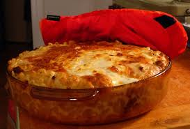

Home
Casserole

Description
A casserole dish is a large, deep pan or bowl used to cook various dishes in the oven; it is also a type of food cooked in such a dish.
Ingredients
- Ground beef: Start with a pound of lean ground beef. You can also use ground turkey.
- Macaroni and cheese mix: Stir a package of macaroni and cheese mix into the ground meat.
- Canned tomatoes: You'll need a can of diced tomatoes.
- Milk: A cup of milk helps create a rich and creamy sauce.
- Frozen vegetables: A combination of frozen peas and frozen corn adds color and flavor.
- Salts: Seasoned salt enhances the overall flavor of the easy dish.
- Cheeses: Shredded Cheddar cheese helps bring the whole thing together.
Step
- Cook the beef until brown and crumbly.
- Stir in the mix, tomatoes, milk, and frozen vegetables.
- Bring to a boil, then simmer until the pasta is tender.
- Season and add the cheese.